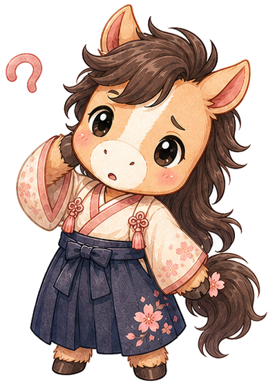
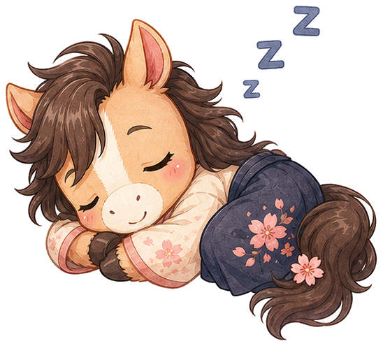

Кони — маскот в чиби-стиле Ghibli
Финальные иллюстрации (AI-generated, ChatGPT image). Готовы к подключению в продукт.
Эмоциональные позы

Default · Greeting
Главный экран, онбординг

Happy · Celebration
Правильный ответ, milestone, anime moment

Thinking · Hint
Подсказка, объяснение грамматики

Surprised · New material
Подсказка, новый урок

Sleeping · Streak Freeze
"Сегодня отдыхаем" — замораживает стрик без вины
App Icon
Иконка приложения для App Store / Play
Размеры в UI
32px (favicon)
64px (header)
120px (avatar)
200px (hero)
Промпт, по которому был сгенерирован Кони
Главный (full-body):
chibi horse mascot character, Studio Ghibli art style, Hayao Miyazaki aesthetic, soft watercolor painting, hand-drawn anime, big expressive black eyes with white highlights, flowing dark brown mane in Ghibli style, warm cream and peach coat, gentle smile, small pink cheek blush, friendly pose waving hello, wearing a tiny indigo hakama, soft pastel background with cherry blossoms, warm sakura pink and beige palette, transparent background, character sheet, full body, high detail, 2D illustration, clean lineart, --ar 1:1 --style raw
Эмоции (sticker pack):
same horse character, four expressions: 1) happy celebrating with raised hooves and sparkles 2) thinking with paw on chin and question mark 3) sleeping curled up with z's 4) confused tilted head, Ghibli style, transparent background, sticker sheet layout
Иконка приложения:
chibi Ghibli horse face only, frontal symmetric portrait, big round black eyes, soft cream coat, dark mane framing the face, minimal background, app icon style, rounded square composition, sakura pink soft glow, --ar 1:1
📌 Файлы маскота
img/koni/koni-default.png— full-body, машет привет (онбординг, hero)img/koni/koni-happy.png— радостный с искрами (правильный ответ, anime moment)img/koni/koni-thinking.png— задумчивый (подсказки, объяснения)img/koni/koni-surprised.png— удивлённый "Oh!" (новый материал)img/koni/koni-sleeping.png— спит (streak freeze)img/koni/koni-icon.png— иконка приложения (квадрат с сакурой)img/koni/koni-stickers.png— стикерпак (4 эмоции в одном файле)
Что ещё нужно для MVP
- Дополнительные эмоции: sad/correcting (ошибся), excited (удивлённо-радостный), waving (привет/пока), wink (подмигивает с подсказкой)
- Lottie-анимация дыхания и моргания для главного экрана
- Mini-Кони (head only) для inline-подсказок в тексте